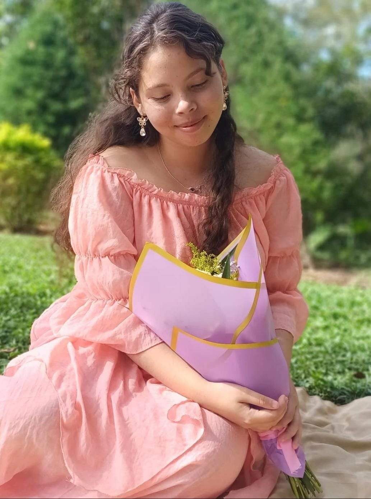
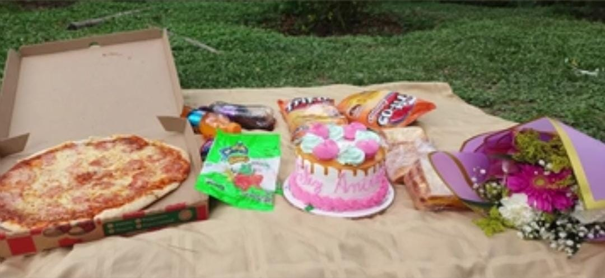
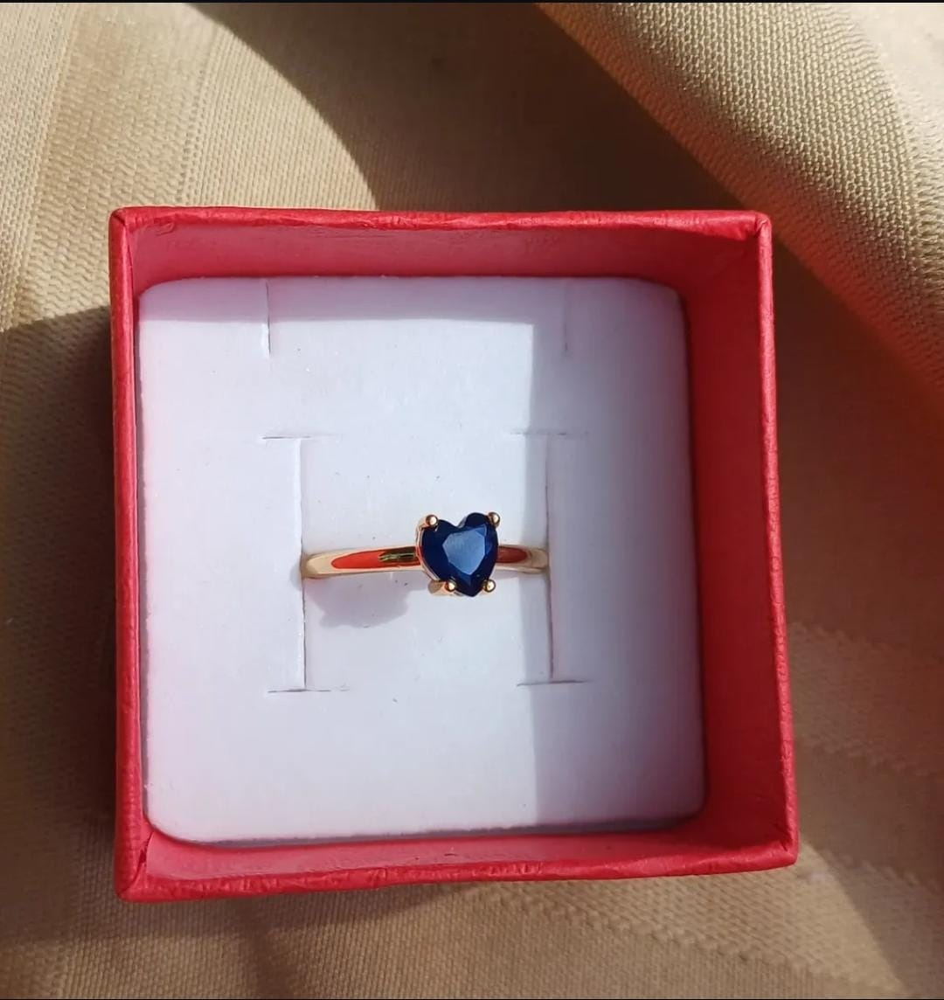

Narrative essay: The perfect imperfect day
One of the most unexpected events in my life was when my boyfriend gave me my promise ring. To give you some context, initially, I had been dating him for six years. I love him and I know deep down that he is my soulmate; he is incredibly kind and always treats me like a prince.
That day, everything started out wonderfully. First, I prepared myself by putting on a beautiful dress and applying my makeup, feeling genuinely ecstatic about what was to come. When I arrived at the Dunkin' Donuts, I noticed I had gotten there first. Subsequently, I waited for ten minutes for him. To calm my nerves, I whispered to myself, "Don't worry, Madisson, he is coming; you just need to wait a few minutes." Meanwhile, I was scrolling through my phone when suddenly I saw him approaching. He was carrying a gorgeous bouquet of flowers that looked like a vibrant burst of springtime.
Shortly after, everything seemed fine, but we soon ran into unexpected problems. We had planned to go to Picacho Park, and a friend had promised to help us drive there. However, he canceled at the absolute last minute. Because we had already planned every detail perfectly, I became incredibly stressed. To make matters worse, we had to hail a taxi and ended up walking a massive distance under the hot sun. Consequently, I felt very sad because of how disastrously everything was turning out.
By the time we finally started to set up our picnic, I was on the verge of tears. My makeup had been completely ruined by the heat, my hair was a messy nest, and the cake looked as crushed and deflated as an old balloon. I truly believed the day was going to end terribly, but I had no idea what my boyfriend had secretly been planning for me.
Gently, he told me to go fix my makeup and hair so he could give me a special gift, so I did. As soon as I returned, he took my hand, looked into my eyes, and said, "I am so sorry for making you wait, and I want you to know how much I love you." Then, he pulled a small box out of his pocket. When I opened it, I discovered a beautiful gold ring with a blue heart that sparkled like a drop of clean ocean water. I was completely speechless; the day I thought was ruined instantly turned into the most memorable one of my life. Reflecting on that afternoon, I had no idea what the next few months would be like, but I knew our future together would be brighter than ever.


